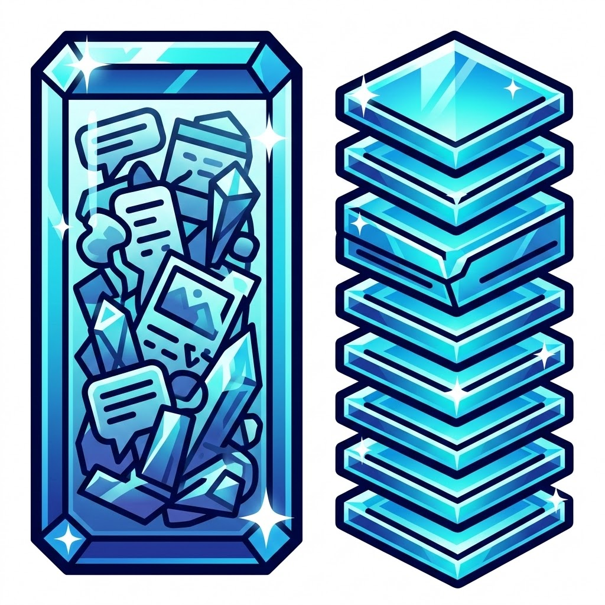
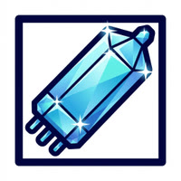
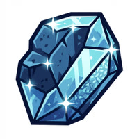

Window Warriors or New Task Masters?
Are you stacking everything in one chat? Making new chats is probably the most important thing you can do to manage context while editing.

Are you stacking everything in one chat? Making new chats is probably the most important thing you can do to manage context while editing.
How to spot when AI is running you in circles—and why a quick search often beats two hours of kernel edits and recycled advice.
LLM vibe-coding apps are mostly VSCode forks. They share Skill.md, so you can write skills for a wide audience—and non-programmers can direct the LLM from the IDE.
Building a Cursor skill that calls Gemini to generate crystalline hero images for posts and wires them into the HTML and meta tags.
Constraint over scale: why business AI needs smaller systems, smarter bowls, and humans who know how to query.
Where programmers add value in the LLM skill ecosystem: marshaling AI with well-tested skills, vibe coding, and talking to your tools.
Bouncing between ChatGPT, Cursor, TypingMind, and Google Antigravity for perspective—and why a gang of $20 plans beats one $200 plan.

Musings on LLMs, agent skills, MCP servers, and how they're speedrunning early computing—batch systems, tools, and the next layer where reliability improves.

Deciding when to hone the thing and move on because it's sharp enough to do the job is a trick. Grit levels and when to jump ship.
How to run Google's Antigravity in a Hyper-V VM so it can't cause havoc. Fine-grained git tokens and snapshots.
I asked three AI assistants to sum up our work and their take on working with me. Here's what they said.